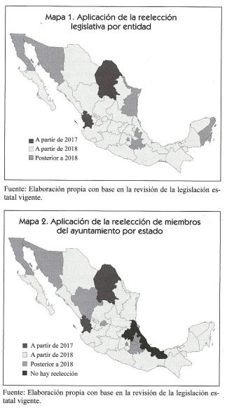

Funcionarios en campaña
Dos de los aspectos más importantes de las últimas reformas en material político-electoral podrían entrar en colisión. Si no se armonizarán los supuestos en los que están sustentados el principio de imparcialidad en el uso de los recursos públicos y la reelección de legisladores (federales y locales) y miembros de los ayuntamientos, su operación podría dificultar la terea de las autoridades electorales durante el próximo proceso electoral.
En 2007-2008, los cambios constitucionales y legales reforzaron el principio de imparcialidad en el uso de recursos públicos. En la exposición de motivos de origen al proyecto de reforma al artículo 134 constitucional, se definió que uno de sus objetivos consistía en lograr la imparcialidad de los servidores públicos durante la competencia electoral y evitar que utilizaran su cargo para promover sus ambiciones personales en el ámbito político.
El párrafo séptimo del artículo 134 establece una regla tendente a garantizar la imparcialidad de los servidores públicos durante los procesos electorales: la prohibición de utilizar recursos públicos para influir en las preferencias. La restricción toma fuerza cuando se interpreta bajo el principio constitucional de equidad en la contienda. Así, el modelo de comunicación política adoptado en 2008, que tuvo como objetivo asegurar mayor equidad en la contienda, introdujo restricciones a la propaganda gubernamental definió su carácter institucional y orientación social, la temporalidad en su difusión, así como la supresión de la promoción personalizada de cualquier servidor público.
Los cambios plasmados en el artículo 134 vinieron aparejados de la excepción contenida en el Código de Instituciones y Procedimientos Electorales para permitir la difusión de informe anual de labores de los servidores públicos. Este informe podría difundirse una vez al año con tres tipo de restricciones: 1) espacial, en estaciones y canales con cobertura regional correspondiente al ámbito geográfico de responsabilidad del servidor público; 2) temporal, en un lapso que no exceda los siete días anteriores y cinco posteriores a la fecha en que se rinda el informe siempre fuera del periodo de campaña electoral; y 3) de contenido, que en ningún caso podría tener fines electorales.
Sin embargo, después de la reforma, el Congreso ha fracasado en sus repetidos intentos de contemplar el marco normativo de las disposiciones contenidas en el artículo 134. En 2012, la suscribirse el Pacto por México, se planteó la creación de una instancia ciudadana y autónoma que supervisaría la contratación de publicidad de todos los niveles de gobierno en medios de comunicación (compromiso 95). Incluso con la reforma política de 2014 se incluyó, como en 2007, la obligación de que el Congreso de la Unión expidiese la ley reglamentaria específica sobre propaganda gubernamental abrió paso a la emisión de reglamentos, criterios, y jurisprudencia de las autoridades electorales administrativas y jurisdiccionales.2
La Constitución, las leyes electorales y demás disposiciones normativas han reforzado el principio de imparcialidad y neutralidad con el que deben conducirse los servidores públicos: el ejercicio de los recursos públicos sin fines partidistas o electorales; la suspensión de la propaganda gubernamental durante el periodo de campaña; la actuación "neutral" de los funcionarios públicos antes pronunciamientos a favor o en contra de actores políticos en contienda, y la restricción a la participación activa de funcionarios en las vida político-partidista, en un primer momento, fuera de horarios de trabajo, y después, exclusivamente en días no laborales.
En 2014, una nueva reforma constitucional introdujo uno de los cambios más sustanciales al sistema político mexicano: sustituyó la figura de la no reelección consecutiva por la de límites al número de periodos en el cargo para legisladores y miembros de los ayuntamientos. La prohibición de la reelección consecutiva se aprobó en 1933. Fue un cambio constitucional promovido por el ex Presidente Plutarco Elías Calles, líder de naciente Partido Nacional Revolucionario (PNR), antecesor del PRI. Calles buscaba mediante la rotación obligatoria de cargos la centralización del poder en un solo partido político nacional, que aglutinaría a los partidos y grupos políticos locales que dominaban la política mexicana en la década de 1920.
De acuerdo con las nuevas disposiciones constitucionales aprobadas en 2014, los diputado federales y locales podrán permanecer en su cargo hasta por cuatro periodos de tres años consecutivos; los senadores de la Republica, dos periodos de seis años, y los alcaldes, síndicos y regidores, dos periodos de tres años. Desde luego, su permanencia en el cargo de un periodo a otro está sujeta a una condición democrática: conseguir que los votantes de su distrito, estado, circunscripción o municipios lo reelijan.
Los efectos de los límites al número de periodos en el cargo para legisladores e integrantes de los ayuntamientos son aún inciertos. Sin embargo, una cosa se puede anticipar: una vez que entren en vigor, redefinirá los objetivos políticos de quienes ocupen esos cargos. Actualmente, la prohibición de la reelección consecutiva hace que el objetivo político dominante sea saltar a otro cargo, idealmente de mayor jerarquía, practica conocida como "chapulinismo". Los límites al numero de periodos en el cargo con toda probabilidad harán de la permanencia en el mismo numero de objetivo político dominante. Desde luego, el incentivo será más poderoso en el caso de los senadores y diputados, ya que ellos tendrán la oportunidad de desarrollar carreras de hasta doce años en el mismo asiento. No obstante, el incentivo para buscar la reelección consecutiva existirá en todos los puestos, porque conseguirla se convertirá en un indicador de éxito entre los propios políticos.
De acuerdo con el artículo 59 de la Constitución, los candidatos deberán ser postulados por el mismo partido o por cualquiera de los partidos integrantes de la coalición a la que hayan pertenecido al ser postulados, a menos que hayan renunciado a su militancia antes de la mitad de su mandato. La Constitución estableció la libertad configurativa de las legislaturas de los estados, de modo que estas regulen las reelección de presidentes municipales, regidores y síndicos, quieres podrán ser reelectos para un periodo consecutivo siempre y cuando su mandato no sea mayo a tres años. También deberán permitir la reelección de los diputados de las legislaturas locales hasta por cuatro periodos consecutivos.
El régimen transitorio aprobado en la reforma constitucional determinó que la reelección consecutiva de nivel federal se aplicará a los diputados y senadores elector en 2018 y tendrá que instrumentarse en 2021 y 2024, respectivamente. Sin embargo, en el terrenos local la mayoría de los legisladores e integrantes de los ayuntamientos podrá buscar su reelección en 2018.
De acuerdo con las constituciones locales (véase la tabla al final de este articulo), en 27 estados la reelección consecutiva iniciará su operación a partir de 2018, al menos para alguno de los cargos donde se tiene prevista, en 21 de ellos, para diputados y miembros de los ayuntamientos simultáneamente. La mayoría de los estados adoptó el límite máximo de cuatro periodos consecutivos para reelegir a sus diputados. Morelos es el único que permitirá tres periodos consecutivos; y ocho estados, los más restrictivos, únicamente la elección hasta por dos periodos. Respecto a los ayuntamientos, en Veracruz el periodo de mandato de gobierno municipal es de cuatro años, por lo que no es aplicable la reforma en materia de reelección hasta en tanto no se reforme la Constitución local para reducir el periodo a tres años.
Como puede observarse, la reelección tendrá sus principales efectos en el ámbito local, donde según la experiencia vivida en reformas electorales pasadas, la armonización de las leyes podría generar futuros conflictos normativos, máxime cuando es entramado electoral está diseñado para un sistema sin reelección consecutiva. Hasta ahora, la Ley General de Instituciones y Procedimientos Electorales y la Ley General de Partidos Político no contienen regulaciones especificas para quienes busquen la reelección, y las constituciones locales se limitan a establecer el régimen transitorio, así como el número máximo de periodo consecutivos para la reelección de legisladores.
En todos los sistemas democráticos en los que se permite la reelección existe la denominada "ventaja del titular" (incumbent advantage). Los contendientes saben que no es lo mismo competir contra el titular del cargo que entrar en una contienda donde no hay titular. La titularidad proporciona ciertas ventajas, como la oportunidad de cultivar una relación con los electores durante el desempeño del cargo, acceso a los medios de comunicación como parte de sus funciones, el apoyo a un equipo permanente, acceso a fuentes de financiamiento privado, así como uso indirecto de los recursos gubernamentales para posicionarse entre el electorado.
Ante la posibilidad de una "ventaja del titular", la actual regulación sobre el principio de imparcialidad suscita más preguntas que respuestas: ¿tendrían que separarse temporalmente los titulares de los cargos de elección popular en un periodo específico —precampaña o campaña— para contender por la reelección? ¿Cómo se limitarían las ventajas que podría aparejar la difusión de informes de gobierno o gestión durante el último tramo de responsabilidad?¿Tendrían que cambiar criterios para definir propaganda personalizada?¿Cómo se definirían los actos anticipados de precampaña y campaña?
Durante la última década, el Tribunal Electoral del Poder Judicial de la Federación (TEPJF) ha ido construyendo su propia doctrina sobre el principio de imparcialidad, ante la falta de regulación por el legislador; entre los sujetos obligados a respetar los límites establecidos en el artículo 134 constitucional incluyó a los legisladores (estatales y federales), así como a los grupos parlamentarios.3
Respecto a la promoción personalizada, el TEPJF ha destinado que se actualiza cuando la propaganda tienda a promocionar al servidor público destacando su imagen, cualidades o calidades personales, logros políticos y económicos, partido de militancia, creencias religiosas, antecedentes familiares o sociales, etcétera, asociando los logros de gobierno con la persona más que con la institución, y el nombre y las imágenes se utilicen en apología del servidor público para posicionarlo en el conocimiento de la ciudadanía con fines político-electorales (SUP-RAP-43/2009). De acuerdo con los criterios establecidos por el TEPJF, al actualizarse expresiones vinculadas con el sufragio, difundir mensajes tendentes a la obtención del otro o mencionar la pretensión de ser candidato a un cargo de elección popular, o hacer cualquier referencia a los procesos electorales, los servidores públicos podrían caer en el supuesto de la promoción personalizada, lo que constituiría una violación a la normatividad electoral si se acreditara el uso de recursos públicos (SUP-RAP-74/2008 y 75/2008).
Sobre los informes de labores, el TEPJF avaló que los legisladores pueden difundir sus informes de actividad en promocionales de radio y televisión, a excepción de periodo de campañas electorales.4 En las tesis LVIII/2015, el Tribunal consideró un elemento adicional respecto a la temporalidad de los informes de gestión legislativa al limitar su realización a una sola ocasión del año, después de concluido el segundo periodo de sesiones ordinarias y en fechas de guarden inmediatez razonable a la conclusión del año legislativo del que se informe.
Finalmente, sobre la participación activa de funcionarios públicos en la vida político-partidista, el TEPJF ha definido el horario laboral de los servidores públicos como un recurso publico que no debe utilizarse con fines partidistas o electorales. La participación activa de servidores públicos en actos proselitistas celebrados en días inhábiles tiene sustento en las libertades de expresión, reunión y asociación (SUP-RAP-75-2010).
El TEPJF ha sostenido que la obligación constitucional que tienen los servidores públicos de observar el principio de imparcialidad encuentra su alcance en la necesidad de preservar condiciones de equidad en la contienda electoral, lo que quiere decir que debe garantizarse la presentación del servicio público y que el cargo que se ostenta no se utilice para fines político-electorales, sin que ello implique una restricción desproporcionada, injustificada o innecesaria al ejercicio de los derechos fundamentales del servidor público.
En 2012, la Sala Superior del TEPJF determinó que la sola asistencia de servidores públicos a actos de proselitismo político en días inhábiles no estaba prohibida y, por sí misma, no implicaba un uso indebido de recursos públicos. Amparados en esta tesis, funcionarios públicos comenzaron a pedir licencia sin goce de sueldo para faltar a sus labores asistirá en días hábiles a eventos proselitistas. En ese momento, la interpretación que realizó el Consejo General del IFE fue pedir una licencia sin goce de sueldo habilitaba legalmente a los servidores públicos para participar en actos político-electorales en días hábiles.
En 2015, el TEPJF modificó esta interpretación y señaló que los días inhábiles sólo pueden ser aquellos contemplados en las legislaciones como inhábiles y los días de descanso: …la obligación constitucional de los servidores públicos de observar el principio de imparcialidad, encuentra sustento en la necesidad de preservar condiciones de equidad en la contienda electiva, lo que quiere decir que el cargo que ostentan no se utilice para afectar los procesos electorales a favor o en contra de un candidato o un partido político. En este sentido, cuando se encuentren jurídicamente obligados a realizar actividades permanentes en el desempeño del cargo público, solo podrán apartarse de esas actividades y asistir a eventos proselitistas, en los días que se contemple en la legislación como inhábiles y en los que les corresponda ejercer el derecho constitucional a un día de descanso […] (Tesis L/2015)
En un principio, según los criterios establecidos por el Tribunal (SUP-JCR-195/2016), la participación en actos proselitistas de funcionarios públicos en días hábiles implicar un supuesto indebido uso de recursos públicos. Ello, porque la asistencia de servidores públicos en días hábiles a actos de proselitismo político-electoral, cuya investidura, responsabilidades o participación pudieran implicar una forma de presión, coacción o inducción sobre electores, es un ejercicio indebido de la función publica equiparable al uso indebido de recursos públicos. Como se desprende de la doctrina sobre el principio de imparcialidad elaborada por el TEPJF, ante la ausencia de reglamentación del artículo 134 constitucional, algunos de los supuestos en los que se construye podrían entrar en conflicto con aspectos no normados de la reelección consecutiva de legisladores y miembros de los ayuntamientos, incluso con acuerdos y lineamientos emitidos por el Consejo General del INE. Si persiste la doctrina del TEPJF sobre el principio de imparcialidad en el uso de los recursos públicos y el legislador no emita una regulación que haga compatible la reelección consecutiva con el principio de imparcialidad en el uso de los recursos públicos, el propósito de la reforma que introdujo la reelección podría difuminarse o quedar en buenos deseos.
Sin la armonización de marco legal vigente, al menos dos elementos producen efectos indeseables: 1) la falta de continuidad del ejercicio de cargo y 2) el sostenimiento del velo de neutralidad impuesto a los funcionarios públicos para abstenerse de emitir pronunciamientos a favor o en contra de actores políticos en la contienda o posicionarse frente a temas de debate público presentes en la precampaña y campaña.
Los servidores públicos que aspiren a la reelección ostentarán el doble carácter de servidores públicos y precandidatos o candidatos; si la legislación no establece la separación temporal del cargo, la prohibición de que asistan a actos proselitistas limitará el pleno goce de sus derechos políticos para realizar actos de precampaña o campaña exclusivamente a días inhábiles y fines de semana.
La alternativa de obligar a solicitar una licencia temporal para competir por una reelección tiene sus desventajas. Un motivo de preocupación son las circunstancias concretas cuando el titular del cargo público tenga que solicitar licencia para contender de nueva cuenta por el mismo cargo, pues quedaría habilitado su suplente para concluir tareas del último tramo de responsabilidad.
La separación del cargo es una restricción compleja desde que desperdicia tiempo y recursos. Tres años son de por sí poco tiempo para desempeñar un cargo, y con la suplencia propuesta ya en algunas iniciativas de reforma constitucional en los estados (Chiapas y San Luis Potosí), se limita el beneficio de la profesionalización y especulación de la función legislativa, así como el seguimiento a los proyectos legislativos y de gobierno. No es difícil suponer que la mayoría de los políticos optará por la reelección, pues como lo hemos señalado, su logro representaría un nuevo indicador de éxito en la política. Así, la sustitución de un numero importante de titulares por suplentes podría traer graves consecuencias. Una de ellas es el efecto disruptivo sobre el funcionamiento de órganos colegiados (planos de los congresos, comisiones legislativas y ayuntamientos), pues rompería con la normalidad del ciclo de gobierno y acotaría los alcances del mismo.
Tampoco es difícil pensar que los políticos con mayor experiencia, quienes ocupan cargos relevantes en el Congreso de la Unión o las legislaturas de los estados, como presidencias de comisiones, o que los propios titulares de los ayuntamientos, busquen la reelección. Con la discontinuidad de las responsabilidad aumentan los riesgos de un letargo legislativo o de interrupción de proyectos de gobierno. La falta de experiencia y conocimiento de los suplentes, quienes tendrían que completar el periodo, dificultará que se alcancen acuerdo relevantes en los órganos colegiados, cuya conducción, como sabemos, es determinante para desahogar las agenda legislativas y de gobierno.
Respecto al velo de neutralidad impuesto a los funcionarios públicos para realizar pronunciamientos políticos que influyan en la contienda, sin un cambio en la legislación vigente tendríamos precampañas y campañas silenciadas. Asimismo, la entrega de beneficios y la exaltación de logros de gobierno podrían cruzar la delgada línea que ha construido con sus criterios el TEPJF y configurarse como indicios de presión al electorado o uso indebido de recursos públicos.
Como lo hemos revisado, si no se armonizan los supuestos en que están sustentados el principio de imparcialidad en el uso de recursos públicos y la reelección de legisladores y miembros de los ayuntamientos, su operación podría reducir los beneficios planteados en la última reforma política y dificultar enormemente la tarea de por sí completa de las autoridades electorales. El experimento local podría ser un ensayo con altos riesgos de su implementación si los congresos de los estados no se toman en serio su tarea de legislar.
El desafío no es menor, el marco normativo actual y los supuestos bajo los cuales han operado las reglas electorales no están diseñados para ello.

Figura 1: Elecciones en 2018
| Máximo de periodos | ||
|---|---|---|
| consecutivos | Posibilidad | |
| Entidad | para legisladores | de reelección |
| Aguascalientes | 2 (6 años) | 2018 diputados 2019 ayuntamientos |
| Baja California | 4 (12 años) | 2019 |
| Baja California Sur | 4 (12 años) | 2018 |
| Campeche | 4 (12 años) | 2018 |
| Coahuila | 4 (12 años) | 20175 |
| Colima | 2 (6 años) | 2018 |
| Chiapas | 4 (12 años) | 2018 |
| Chihuahua | 2 (6 años) | 2018 |
| Ciudad de México | 4 (12 años) | 2021 diputados y alcaldías |
| Durango | 4 (12 años) | 2018 diputados 2019 ayuntamentos |
| Guanajuato | 4 (12 años) | 2018 |
| Guerrero | 4 (12 años) | 2018 |
| Hidalgo | 2 (6 años) | 2018 |
| Jalisco | 4 (12 años) | 2018 |
| México | 4 (12 años) | 2018 |
| Michoacán | 4 (12 años) | 2018 |
| Morelos | 3 (9 años) | 2018 |
| Nayarit | 4 (12 años) | 20176 |
| Nuevo León | 4 (12 años) | 2018 |
| Oaxaca | 2 (6 años) | 2018 |
| Puebla | 4 (12 años) | 2021 |
| Querétaro | 4 (12 años) | 2018 |
| Quintana Roo | 2 (6 años) | 2018 ayuntamientos 2019 diputados |
| San Luis Potosí | 4 (12 años) | 2018 |
| Sinaloa | 4 (12 años) | 2018 |
| Sonora | 4 (12 años) | 2018 |
| Tabasco | 4 (12 años) | 2018 |
| Tamaulipas | 2 (6 años) | 2018 ayuntamientos 2019 diputados |
| Tlaxcala | 4 (12 años) | 2018 diputados 2021 ayuntamientos |
| Veracruz | 4 (12 años) | 2018 diputados |
| Yucatán | 4 (12 años) | 2018 |
| Zacatecas | 2 (6 años) | 2018 |
Fuente: Estudio comparativo de las constituciones locales realizado por la Dirección Ejecutiva de Prerrogativas y Partidos Políticos del INE.
Nota al pie de página:
Consejero Electoral del Instituto Nacional Electoral y asesor de consejero, repsectivamente. Este artículo fue publicado en la revista Voz y voto, número 292, junio 2017. Los autores han dado su autorización para reproducirlo aquí.
En 2008, el Consejo General del IFE emitió el Acuerdo por cual se aprueba el Reglamento en Materia de Propaganda Institucional y Político Electoral de Servidores Públicos (CG38/2008). Adicionalmente, el Consejo General del otrora IFE y ahora INE ha aprobado más de una veintena de acuerdos para atender las solicitudes hechas por distintos entes públicos sobre excepciones a la regla de suspensión de propaganda gubernamental durante las campañas federales y locales. En 2015, el Consejo General del INE aprobó el Acuerdo por el que se emiten normas reglamentarias sobre la imparcialidad en el uso de recursos públicos a que se refiere el artículo 449, párrafo 1, inciso c), de la Ley General de Instituciones y Procedimientos Electorales en relación con el artículo 134, párrafo séptimo de la Constitución. En 2017, el propio INE aprobó el Acuerdo por el que se determina ejercer la facultad de atracción para establecer mecanismo para contribuir a evitar acciones que generen presión sobre el electorado, así como el uso indebido de programas sociales y la violación a los principios de equidad e imparcialidad, durante los procesos electorales locales 2016-2017 en Coahuila, Estado de México, Nayarit y Veracruz (INE/CG04/2017 e INE/CG108/2017).
SUP-RAP-75/2009, 82/2009, 145/2009 y 159/2009.
SUP-RAP-75, 82/2009, 87/2009 y 89/2009.
Recientemente, la Sala Superior del TEPJF ha emitido criterios sobre la elección consecutiva de síndicos y regidores que buscan ser presidentes municipales en Coahuila. En los recursos SUP-REC-1172/2017 y 1173/2017, determinó que podrá haber reelección cuando un ciudadano, habiendo desempeñado un cargo determinado, se postule de manera consecutiva para el mismo puesto; no obstante, los casos que un funcionario pretenda postularse para un cargo distinto, aun cuando forme parte del mismo órgano, no podrán considerarse reelección, ya que funcionalmente no se estarían ejerciendo las mismas atribuciones.
El pleno de la Sala Superior del TEPJF revocó el acuerdo dictado por el consejero presidente del Instituto Estatal Electoral de Nayarit (IEEN), por medio de cual se negó a los integrante en funciones de los ayuntamientos de la entidad la posibilidad de reelegirse en sus cargos para el periodo 2017-2021. Al resolver el asunto SUP-JDC-90/2017 y acumulando, la Sala Superior determinó que el consejero presidente del IEEN carece de competencia para emitir ese acuerdo. Así, declaró fundados los agravios, dada la situación extraordinaria que tendrían los ayuntamientos que, por una sola ocasión, se extenderán por un periodo de cuatro años, lo cual ya fue validado por la Suprema Corte y hace factible la elección consecutiva para el periodo 2017-2021.